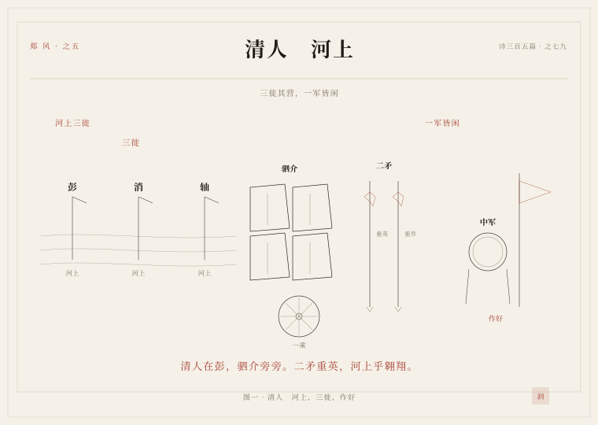
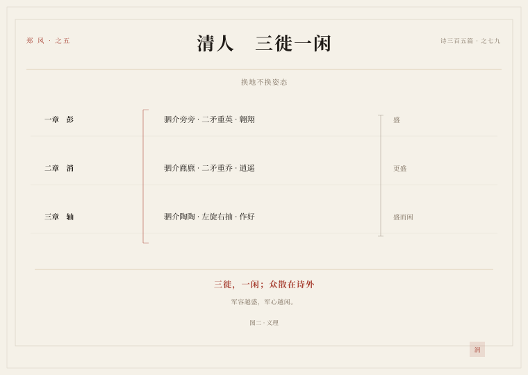

第七十九篇 清人
郑风 · 之五 SJ079
朗读 · 普通话
依经文原文朗读，章次不读出；配古琴底乐，不改速、不加拖腔。全库同一音色（豆包 TTS），非播音员录制。
一 解题
诗三判：
- 谁在说：一个站在河岸上的旁观者。他看见清邑的兵驻在彭、消、轴，看见四马披甲、两矛重饰，看见车左旋、箭右抽，最后看见主将在车中“作好”。诗里没有一个人开口，只有一双眼睛。
- 说什么事：郑文公派高克带着清邑之兵去河上御狄，久不召还。兵在河上无事，今日移彭，明日移消，后日移轴；甲是亮的，矛是重的，人是闲的。诗只写“闲”，不写“散”；“众散而归”在诗外。
- 为何编在此：郑风之五。078
写叔段的“多才”，是一场满猎；079
写高克的“众散”，是一支空营。一满一散，都是“人”的问题：一个才太盛，一个心已散。
但 079 是高克之师，不是叔段，不能当同一人的传记链。
《毛序》：“《清人》，刺文公也。高克好利而不顾其君，文公恶而欲远之，不能，使高克将兵而御狄于竟。陈其师旅，翱翔河上，久而不召，众散而归。高克奔陈。公子素恶高克进之不以礼，文公退之不以道，危国亡师之本，故作是诗也。”
朱子《诗集传》：“赋也。清人，高克之师也。郑文公恶高克，使将清邑之兵，御狄于河上，久而不召，师散而归。郑人为之作此诗。公子素，郑之公族也。此诗盖公子素所作也。”
本库的看法：《清人》是一首把“军容”写成“游观”的诗。
三章只换地名，不换姿态：彭、消、轴是三个驻处，翱翔、逍遥、作好是三种闲。军容越盛，军心越闲；军心越闲，离“散”越近。
诗不写“散”，因为“散”是结果；诗只写“闲”，因为“闲”是原因。毛序说“久而不召”，这四个字才是全诗的开关：将在外，君不召；兵在河上，将不召。上下都不把这件事当正事。
先辨五事：“清人”是清邑之兵，不是“清国之人”；“彭、消、轴”是河上三处地名，不是三种兵器；“驷介”是四马披甲，不是四件甲衣；“旁旁、麃麃、陶陶”都是盛貌、武貌、驰貌，不是声音；“中军作好”的“好”是容好，不是“好将”。
二 经文
第一章
清人在彭，驷介旁旁。
二矛重英，河上乎翱翔。
第二章
清人在消，驷介麃麃。
二矛重乔，河上乎逍遥。
第三章
清人在轴，驷介陶陶。
左旋右抽，中军作好。
分章：三章，章四句。
三 韵读
- 一章：彭、旁、英、翔，阳部；四句一韵到底。
- 二章：消、麃、乔、遥，宵部；四句一韵到底。
- 三章：轴、陶、抽、好，幽部（“轴”入声）；四句一韵到底。
读法：三章三个韵部，像三次移营；每章内部却一韵到底，像每处都安顿得很稳。韵越稳，事越不稳：一个军队在三个地方都“住得下”，正说明它已经不打算走。
四 字义与名物
- 清人：清邑之兵。清，郑邑名；不是清国。
- 彭、消、轴：毛传“河上地也”，具体今地不详。三处不必强指，诗要的是“三徙”。
- 驷介：四马披甲。驷，一车四马；介，甲。
- 旁旁：盛貌，一作“彭彭”，马甲鲜明之状。
- 麃麃：武貌；马行武健之状。
- 陶陶：毛传“驱驰之貌”；一读“滔滔”，行的样子。此处取“驰骋自得”。
- 二矛：一车二矛，车右、车左各一。重英：矛上重缨。重乔：矛上重句，毛传“累荷也”，朱子以为“矛之上句”；注家小异。
- 左旋右抽：御者向左回旋，射者向右抽矢。毛传“左旋，讲兵车；右抽，抽矢以射”；朱子“左旋，谓御者；右抽，谓勇士抽矢以射”。
- 中军：将在鼓下，居车中。作好：作容好，摆出好看的仪容；不是“好战”。
五 今译
清邑的兵驻在彭，四马披甲，鲜明强壮。两矛上重缨垂垂，在河上徘徊游走。
清邑的兵驻在消，四马披甲，武健有力。两矛上重句叠叠，在河上逍遥闲逛。
清邑的兵驻在轴，四马披甲，驰骋自得。车向左回旋，箭向右抽出，主将在车中摆出好看的仪容。
六 章旨
- 一章：写“在彭”。甲鲜明，矛重饰，人却在河上“翱翔”。盛与闲，第一眼就并置。
- 二章：写“在消”。只换地名与“逍遥”二字。换的是驻地，不换的是姿态。
- 三章：写“在轴”。加“左旋右抽，中军作好”：兵在演，将也在演；演给谁看？河上没有人，只有自己。
总收：军容越盛，军心越闲；三处移营，移不动一个“散”字。
诗不写散，是因为散在诗外；诗只写闲，是因为闲在诗里。
七 诗教
- 兴：以河上军容起兴。甲、矛、车都是“盛”的物，盛的物底下是“闲”的人。
- 观：观一国之师，不在甲兵多少，在“召不召”。将在外而君不召，兵在河上而将不治，这就是“危国亡师”的本。
- 群：众人看见的是甲与矛，主将看见的是自己的“容好”。一双眼睛看外，一双眼睛看自己。
- 怨：诗里没有怨声。怨在诗外：众散而归，高克奔陈。诗人不骂，只把“闲”画给你看；你看完，自己会骂。
八 分寸与边界
- 不可把“翱翔”当写鸟。它写的是军队无事，在河上徘徊；鸟一飞，诗就轻了。
- 不可把“清人”当“清国之人”。清是郑邑；一读成国，地理就错。
- 不可把“中军作好”当赞美。“好”是容好，是摆样子；
不是“好将”“好兵”。
- 不可把三章当三次行军。三章是三次移营，姿态不变；换地不换闲，才是诗的结构。
- 不可把高克与叔段当一人。079 是高克之师，078
是叔段之猎；主题可对读，传记不可连。
九 存疑
- 作者：毛序说是公子素“恶高克进之不以礼，文公退之不以道”，作是诗；朱子说“此诗盖公子素所作”，语气稍缓。是否公子素一人所作，无确证。
- 三地：彭、消、轴，毛传只云“河上地”，今地不可确指。强指某县某岸，反失诗旨。
- 重乔：毛传“累荷也”，朱子以为“矛之上句”，一说“乔”借为“翘”。三说可并存。
- 左旋右抽：毛传分“御者旋、射者抽”，朱子同；一说“左旋”为将车左转，“右抽”为抽兵刃。以毛、朱为近。
- 中军作好：“好”是容好，一说是“好战”“自好”。从“容好”读，才与“翱翔、逍遥”一贯。
十 跨典
- 《左传·闵公二年》：“郑人恶高克，使帅师次于河上，久而弗召，师溃而归，高克奔陈。”——可与毛序对读；诗所不写，传所补足。
- 《论语·子路》：“必也正名乎！”——高克之进不以礼，文公之退不以道，名不正则师不立，可作旁证。
- 《孙子·计篇》：“兵者，国之大事，死生之地，存亡之道，不可不察也。”——诗写“闲”，正见“不察”。
- 《诗本音》：三章韵读，彭、旁、英、翔阳部，消、麃、乔、遥宵部，轴、陶、抽、好幽部，见卷三。
十一 双卡与图
双卡八对：
| 清人（清邑之兵） |
清人（清国之人） |
| 彭、消、轴（河上三地） |
彭、消、轴（三种兵器） |
| 驷介（四马披甲） |
驷介（四件甲衣） |
| 旁旁、麃麃、陶陶（盛、武、驰） |
旁旁、麃麃、陶陶（声音） |
| 二矛重英（矛上重缨） |
二矛重英（两枝矛） |
| 左旋右抽（御者旋、射者抽） |
左旋右抽（左转右打） |
| 中军（将在鼓下） |
中军（全军） |
| 作好（作容好） |
作好（好战、能战） |

图一 · 清人 河上、三徙、作好

图二 · 清人 三徙一闲
读图三处：
- 河上三标：图一左侧河线，三个地名“彭、消、轴”沿岸排开，不是三座城，是三次移营。诗的地名不是地理，是动作。
- 四甲二矛：图一中间只画四块甲片、两枝矛、一只车轮，不画马。“驷介”是马披甲，不是马；画甲，比画马更近“军容”。
- 中军作好：图一右侧一鼓一旗，旗下无脸，只画一只摆正的袖手。“作好”是摆样子；脸一画，就成了个人，诗反而窄了。